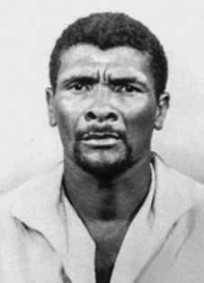

Manoel
Aleixo
da Silva
CIRCUNSTÂNCIAS DA MORTE
Manoel Aleixo da Silva foi morto, com um tiro nas costas, por agentes do DOPS/PE, em 29 de agosto de 1973, no município de Ribeirão, em Pernambuco, depois de ter sido preso no dia anterior. Segundo a versão oficial, Manoel teria sido morto em um tiroteio travado com agentes policiais no município de Ribeirão, depois de ter reagido à ordem de prisão. O auto de resistência lavrado pelo policial do DOPS/PE Jorge Francisco Inácio registra que Manoel teria reagido à voz de prisão com disparos de arma de fogo, o que resultou na sua morte “em face do revide da agressão sofrida”. A narrativa é reforçada pelo testemunho de outros dois agentes que teriam participado da operação e presenciado a morte de Manoel. Um deles, o policial Severino José de Barros, relatou que estava desarmado quando abordou Manoel, e que ele teria reagido empunhando uma arma e efetuando disparos. Em relatório sobre o caso, o diretor do DOPS/PE, José Oliveira Silvestre, convalidou a versão oficial e declarou que o policial Jorge Francisco Inácio “agiu no estrito cumprimento de dever legal, consoante disciplina a nossa legislação em vigor”. Segundo declarações do Delegado de Polícia Odon de Barros Dias, não foi instaurado inquérito para apurar a morte de Manoel “por se tratar de caso afeto à Segurança Nacional”. As investigações sobre o caso demonstram a falsidade da versão divulgada pelos órgãos de segurança. Manoel Aleixo foi preso em sua casa, na cidade de Joaquim Nabuco, no dia 28 de agosto de 1973, segundo os testemunhos da sua esposa e de vizinhos. A esposa Izabel Simplício da Conceição relatou que alguns homens foram até a sua casa naquele dia e levaram Manoel dentro de um “carro grande e verde, mais escuro que a cana”, que “parecia um [sic] veraneio do exército”. Seu relato é complementado pelo depoimento de Epitácio Ferreira, que contou ter visto Manoel dentro do carro, acompanhado pelos homens que o haviam detido: No dia em que Manoel foi preso, cruzei com ele, com vários homens dentro de um carro grande, que acho ser do exército, num local próximo de Ribeirão, indo para Recife. O veículo estava parado e eu vinha a pé, quando percebi as pessoas do carro e o Ventania dentro dele fazendo sinal, para que eu passasse direto. Entendi que estava acontecendo algo anormal e fiz que não estava vendo nada, foi quando peguei uma condução e fui para Joaquim Nabuco, chegando lá fui até a casa de Manoel e a mulher dele, Isabel, disse que uns homens o haviam levado de carro. No dia seguinte Manoel foi assassinado com vários tiros, a notícia saiu no jornal como um tiroteio em Ribeirão, mas ele não andava armado e jamais havia participado de tiroteio. Tanto a companheira Izabel, como Epitácio e José Laurêncio da Silva, vizinho do casal, suspeitaram da versão divulgada, segundo a qual Manoel tinha sido morto em tiroteio, uma vez que ele não andava armado. Além disso, segundo a nota oficial, Manoel teria sido encontrado em Ribeirão, onde estaria residindo, mas o militante nunca deixou de morar na cidade de Joaquim Nabuco, onde efetivamente foi preso, na presença de sua esposa, que confirmou a informação em seu testemunho. Foi localizado, em documentos oficiais, um Pedido de Busca do IV Exército, enviado à 7a Região Militar e à Secretaria de Segurança Pública de Pernambuco, datado de 24 de agosto de 1973, que solicitava a prisão imediata e apresentação de Manoel Aleixo àquele órgão. Posteriormente, a morte de Manoel Aleixo foi informada em documento do CISA, do dia 7 de janeiro de 1974, como resultado das operações realizadas pelo DOI-CODI/IV tendo em vista o desbaratamento do PCR: Esta Agência tomou conhecimento e divulga a seguinte informação: 1 – Em Recife, Maceió, Natal e João Pessoal, o PCR (Partido Comunista Revolucionário) vem sendo desmantelado pelo DOI/IV EX, com a prisão de dezenas de militantes e morte de três deles – Manoel Aleixo da Silva (Ventania), Emanoel Bezerra dos Santos (Flávio) e Manoel Lisboa de Moura (Mário ou Galego). O exame de necropsia realizado no dia 30 de agosto de 1973 concluiu que “O projétil de arma de fogo deflagrado na região clavicular esquerda, penetrou no tórax […], saindo na região mamária”, indicando que Manoel Aleixo foi morto com um único tiro nas costas. Não há informações precisas sobre o local onde foi sepultado o corpo Manoel Aleixo. No entanto, no cabeçalho da perícia tanatoscópica está inscrito “Cemitério de Ribeirão” em lugar incomum, o que pode sugerir que tenha sido enterrado neste cemitério. Diante dos testemunhos e documentos levantados, é possível concluir que, ao contrário da versão oficial, Manoel Aleixo foi preso por agentes do DOPS/PE em Joaquim Nabuco, no dia 28 de agosto de 1973 e levado para Recife, morrendo no dia seguinte, apenas, o que levanta indício de que tenha sido submetido a torturas. No dia 29, foi executado com um tiro nas costas. Quanto à atribuição de responsabilidade pela morte de Manoel Aleixo, há pelo menos três indicações possíveis. Em primeiro lugar, o policial Jorge Francisco Inácio assumiu a autoria do disparo que atingiu fatalmente Manoel, conforme o auto de resistência lavrado pelo próprio agente. Por sua vez, em telegrama enviado ao Diretor do Departamento de Polícia Interior de Recife, no dia 29 de agosto de 1973, o Delegado de Polícia de Ribeirão, Odon de Barros Dias, comunicou que aproximadamente às 8 horas daquele dia, “o Sgt Pm Oscar Egito da Silva que se achava a serviço secreto do exército assassinou a tiros de revólver o popular Manoel Aleixo da Silva”. Há ainda uma terceira hipótese baseada no depoimento prestado pelo ex-delegado do DOPS/ES, Cláudio Guerra, à CNV e à Comissão Estadual da Memória e Verdade Dom Helder Câmara (CEMVDHC), em que o agente declarou ter ido a Pernambuco para matar Manoel Aleixo e descreveu as circunstâncias em que se desenrolou a operação. A versão oficial de morte foi reafirmada pelo Relatório do Ministério da Aeronáutica enviado ao Ministro da Justiça, Maurício Corrêa, em dezembro de 1993, que informa que Manoel Aleixo morreu “num tiroteio com a polícia no interior de Pernambuco”. Algum tempo depois, em 23 de fevereiro de 1996, Izabel Simplício da Conceição, esposa de Manoel Aleixo, deixou seu testemunho sobre a morte do seu companheiro: Acho que mataram ele porque ele era muito bom, era das Ligas Camponesas. Levaram Manoel não sei para onde, depois daquele dia tudo desabou na minha cabeça, foram muitos anos juntos, não dá para esquecer assim, depois disto, para mim o mundo desabou, espero que agora de alguma forma se faça justiça, para que nunca mais aconteça outro final de agosto tão triste, como o de ano de 1973.
Manoel Aleixo da Silva was killed, shot in the back, by DOPS/PE agents, on August 29, 1973, in the municipality of Ribeirão, in Pernambuco, after having been arrested the previous day. According to the official version, Manoel was killed in a shootout with police officers in the municipality of Ribeirão, after reacting to the arrest order. The report of resistance drawn up by DOPS/PE police officer Jorge Francisco Inácio records that Manoel reacted to the arrest warrant with gunshots, which resulted in his death “in the face of the retribution of the aggression suffered”. The narrative is reinforced by the testimony of two other agents who would have participated in the operation and witnessed Manoel's death. One of them, police officer Severino José de Barros, reported that he was unarmed when he approached Manoel, and that he reacted by holding a gun and firing shots. In a report on the case, the director of DOPS/PE, José Oliveira Silvestre, validated the official version and declared that police officer Jorge Francisco Inácio “acted in strict compliance with legal duty, in accordance with our legislation in force”. According to statements by Police Chief Odon de Barros Dias, no investigation was opened to investigate Manoel's death “as it was a case related to National Security”. Investigations into the case demonstrate the falsehood of the version released by security agencies. Manoel Aleixo was arrested at his home, in the city of Joaquim Nabuco, on August 28, 1973, according to the testimonies of his wife and neighbors. His wife Izabel Simplício da Conceição reported that some men came to her house that day and took Manoel inside a “large, green car, darker than sugar cane”, which “looked like an army summer house”. His report is complemented by the testimony of Epitácio Ferreira, who said he saw Manoel inside the car, accompanied by the men who had detained him: On the day Manoel was arrested, I came across him, with several men inside a large car, which I think was from the army, in a place near Ribeirão, heading to Recife. The vehicle was stopped and I was walking, when I noticed the people in the car and Ventania inside it signaling for me to go straight through. I understood that something abnormal was happening and I pretended I wasn't seeing anything, that's when I took a bus and went to Joaquim Nabuco, when I got there I went to Manoel's house and his wife, Isabel, said that some men had taken him by car. The following day Manoel was murdered with several shots, the news appeared in the newspaper as a shooting in Ribeirão, but he was not armed and had never participated in a shooting. Both the companion Izabel, Epitácio and José Laurêncio da Silva, the couple's neighbor, were suspicious of the version published, according to which Manoel had been killed in a shootout, since he was not armed. Furthermore, according to the official note, Manoel would have been found in Ribeirão, where he would be residing, but the militant never stopped living in the city of Joaquim Nabuco, where he was effectively arrested, in the presence of his wife, who confirmed the information in her testimony. A Search Request from the IV Army was found in official documents, sent to the 7th Military Region and the Public Security Secretariat of Pernambuco, dated August 24, 1973, which requested the immediate arrest and presentation of Manoel Aleixo to that body. Subsequently, the death of Manoel Aleixo was reported in a CISA document, dated January 7, 1974, as a result of operations carried out by DOI-CODI/IV with a view to dismantling the PCR: This Agency became aware and publishes the following information: 1 – In Recife, Maceió, Natal and João Pessoal, the PCR (Revolutionary Communist Party) has been dismantled by DOI/IV EX, with the arrest of dozens of militants and the death of three of them – Manoel Aleixo da Silva (Ventania), Emanoel Bezerra dos Santos (Flávio) and Manoel Lisboa de Moura (Mário or Galego). The autopsy examination carried out on August 30, 1973 concluded that “The firearm projectile fired in the left clavicular region, penetrated the chest […], exiting in the mammary region”, indicating that Manoel Aleixo was killed with a single shot in the back. There is no precise information about the place where Manoel Aleixo's body was buried. However, the header of the thanatoscopic examination says “Cemitério de Ribeirão” in an unusual place, which may suggest that he was buried in this cemetery. Given the testimonies and documents collected, it is possible to conclude that, contrary to the official version, Manoel Aleixo was arrested by DOPS/PE agents in Joaquim Nabuco, on August 28, 1973 and taken to Recife, dying the following day, which raises signs that he was subjected to torture. On the 29th, he was executed with a shot in the back. Regarding the attribution of responsibility for the death of Manoel Aleixo, there are at least three possible indications. Firstly, police officer Jorge Francisco Inácio claimed responsibility for the shot that fatally struck Manoel, according to the resistance report drawn up by the officer himself. In turn, in a telegram sent to the Director of the Interior Police Department of Recife, on August 29, 1973, the Police Chief of Ribeirão, Odon de Barros Dias, reported that at approximately 8 am that day, “Sgt Pm Oscar Egypt da Silva, who was on secret service for the army, murdered the popular Manoel Aleixo da Silva with a revolver shot”. There is also a third hypothesis based on the testimony given by the former DOPS/ES delegate, Cláudio Guerra, to the CNV and the State Commission for Memory and Truth Dom Helder Câmara (CEMVDHC), in which the agent declared that he had gone to Pernambuco to kill Manoel Aleixo and described the circumstances in which the operation took place. The official version of death was reaffirmed by the Report from the Ministry of Aeronautics sent to the Minister of Justice, Maurício Corrêa, in December 1993, which states that Manoel Aleixo died “in a shootout with the police in the interior of Pernambuco”. Some time later, on February 23, 1996, Izabel Simplício da Conceição, wife of Manoel Aleixo, left her testimony about the death of her companion: I think they killed him because he was very good, he was from the Peasant Leagues. They took Manoel I don't know where, after that day everything collapsed in my head, it was many years together, I can't forget like that, after that, for me the world collapsed, I hope that now somehow justice will be done, so that there will never be another end of August as sad as the end of 1973.
Manoel Aleixo da Silva fue asesinado, con un disparo en la espalda, por agentes del DOPS/PE, el 29 de agosto de 1973, en el municipio de Ribeirão, en Pernambuco, después de haber sido detenido el día anterior. Según la versión oficial, Manoel fue asesinado en un tiroteo con policías en el municipio de Ribeirão, luego de reaccionar a la orden de arresto. El informe de resistencia elaborado por el policía del DOPS/PE Jorge Francisco Inácio registra que Manoel reaccionó a la orden de aprehensión con disparos, lo que resultó en su muerte “ante la retribución de la agresión sufrida”. La narrativa se ve reforzada por el testimonio de otros dos agentes que habrían participado en el operativo y presenciado la muerte de Manoel. Uno de ellos, el policía Severino José de Barros, denunció que estaba desarmado cuando se acercó a Manoel, y que reaccionó empuñando un arma y disparando. En un informe sobre el caso, el director del DOPS/PE, José Oliveira Silvestre, validó la versión oficial y declaró que el policía Jorge Francisco Inácio “actuó en estricto cumplimiento del deber legal, de acuerdo con nuestra legislación vigente”. Según declaraciones del jefe de policía Odon de Barros Dias, no se abrió ninguna investigación para investigar la muerte de Manoel “por tratarse de un caso relacionado con la Seguridad Nacional”. Las investigaciones del caso demuestran la falsedad de la versión difundida por los organismos de seguridad. Manoel Aleixo fue detenido en su domicilio, en la ciudad de Joaquim Nabuco, el 28 de agosto de 1973, según testimonios de su esposa y vecinos. Su esposa, Izabel Simplício da Conceição, denunció que unos hombres llegaron ese día a su casa y llevaron a Manoel al interior de un “coche grande, verde, más oscuro que la caña de azúcar”, que “parecía una casa de verano del ejército”. Su relato se complementa con el testimonio de Epitácio Ferreira, quien dijo haber visto a Manoel dentro del auto, acompañado de los hombres que lo detuvieron: El día que arrestaron a Manoel, me lo encontré con varios hombres dentro de un auto grande, que creo que era del ejército, en un lugar cerca de Ribeirão, rumbo a Recife. El vehículo estaba detenido y yo caminaba, cuando noté que las personas en el automóvil y Ventania dentro me hacían señales para que siguiera recto. Entendí que algo anormal estaba pasando y hice como que no veía nada, fue entonces que tomé un bus y me dirigí a Joaquim Nabuco, al llegar fui a la casa de Manoel y su esposa Isabel, dijo que unos hombres se lo habían llevado en auto. Al día siguiente Manoel fue asesinado de varios disparos, la noticia apareció en el periódico como un tiroteo en Ribeirão, pero él no estaba armado y nunca había participado en un tiroteo. Tanto la compañera Izabel, Epitácio como José Laurêncio da Silva, vecino de la pareja, sospecharon de la versión publicada, según la cual Manoel había sido asesinado en un tiroteo, ya que no estaba armado. Además, según la nota oficial, Manoel habría sido encontrado en Ribeirão, donde residía, pero el militante nunca dejó de vivir en la ciudad de Joaquim Nabuco, donde fue efectivamente detenido, en presencia de su esposa, quien confirmó la información en su testimonio. En documentos oficiales, enviados a la 7ª Región Militar y a la Secretaría de Seguridad Pública de Pernambuco, de fecha 24 de agosto de 1973, se encontró un Pedido de Búsqueda del IV Ejército, que solicitaba la inmediata detención y presentación de Manoel Aleixo ante ese organismo. Posteriormente, la muerte de Manoel Aleixo fue informada en un documento del CISA, de 7 de enero de 1974, como resultado de operaciones realizadas por el DOI-CODI/IV con vistas a desmantelar el PCR: Esta Agencia tuvo conocimiento y publica la siguiente información: 1 – En Recife, Maceió, Natal y João Pessoal, el PCR (Partido Comunista Revolucionario) fue desmantelado por el DOI/IV EX, con la detención de decenas de militantes y la muerte de tres de ellos: Manoel Aleixo da Silva (Ventania), Emanoel Bezerra dos Santos (Flávio) y Manoel Lisboa de Moura (Mário o Galego). El examen de autopsia practicado el 30 de agosto de 1973 concluyó que “El proyectil de arma de fuego disparado en la región clavicular izquierda, penetró el tórax […], saliendo por la región mamaria”, indicando que Manoel Aleixo fue asesinado de un solo disparo en la espalda. No hay información precisa sobre el lugar donde fue enterrado el cuerpo de Manoel Aleixo. Sin embargo, el encabezado del examen tanatoscópico dice “Cemitério de Ribeirão” en un lugar inusual, lo que puede sugerir que fue enterrado en este cementerio. Teniendo en cuenta los testimonios y documentos recopilados, es posible concluir que, contrariamente a la versión oficial, Manoel Aleixo fue detenido por agentes del DOPS/PE en Joaquim Nabuco, el 28 de agosto de 1973 y trasladado a Recife, falleciendo al día siguiente, lo que hace sospechar que fue sometido a torturas. El día 29 fue ejecutado de un tiro en la espalda. Respecto a la atribución de responsabilidad por la muerte de Manoel Aleixo, hay al menos tres indicios posibles. En primer lugar, el policía Jorge Francisco Inácio se atribuyó el disparo que mató a Manoel, según el informe de resistencia elaborado por el propio agente. A su vez, en telegrama enviado al Director del Departamento de Policía Interior de Recife, el 29 de agosto de 1973, el Jefe de Policía de Ribeirão, Odon de Barros Dias, informó que aproximadamente a las 8 de la mañana de ese día, “el Sargento Primer Ministro Oscar Egypt da Silva, que se encontraba en el servicio secreto del ejército, asesinó al popular Manoel Aleixo da Silva con un disparo de revólver”. Existe también una tercera hipótesis basada en el testimonio brindado por el ex delegado del DOPS/ES, Cláudio Guerra, ante la CNV y la Comisión Estatal para la Memoria y la Verdad Dom Helder Câmara (CEMVDHC), en el que el agente declaró que había ido a Pernambuco a matar a Manoel Aleixo y describió las circunstancias en que se desarrolló la operación. La versión oficial de la muerte fue reafirmada por el Informe del Ministerio de Aeronáutica enviado al Ministro de Justicia, Maurício Corrêa, en diciembre de 1993, que afirma que Manoel Aleixo murió “en un tiroteo con la policía en el interior de Pernambuco”. Tiempo después, el 23 de febrero de 1996, Izabel Simplício da Conceição, esposa de Manoel Aleixo, dejó su testimonio sobre la muerte de su compañero: Creo que lo mataron porque era muy bueno, era de las Ligas Campesinas. Se llevaron a Manoel no sé a dónde, después de ese día todo se derrumbó en mi cabeza, fueron muchos años juntos, no puedo olvidar así, después de eso, para mí el mundo se derrumbó, espero que ahora de alguna manera se haga justicia, para que nunca haya otro final de agosto tan triste como el de 1973.